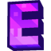

01
Recompensas especiais
Entre na disputa por recompensas como VIPs, créditos e chaves. Cada evento é uma nova oportunidade de se destacar.

REDE ETERNALExplore, evolua, faça alianças e construa sua história na Rede Eternal. A aventura está esperando por você.
A Rede Eternal foi feita para quem quer viver aventuras de verdade. Faça novas amizades, encare desafios, participe de eventos e escreva sua própria história bloco por bloco.
Entre para jogar, fique pelas experiências — e faça parte de algo maior.
Faça parte da comunidade ↗O End SMP é o modo Semi-Anarquia da Rede Eternal: liberdade para explorar, negociar, construir alianças e disputar seu espaço. Evolua no seu ritmo, faça escolhas estratégicas e transforme cada sessão em uma nova história.
Prepare-se para competir, colaborar e disputar recompensas com a comunidade.
Entre na disputa por recompensas como VIPs, créditos e chaves. Cada evento é uma nova oportunidade de se destacar.
A equipe pode surpreender a comunidade com eventos a qualquer momento. Acompanhe os avisos no Discord para não perder nada.
Quer propor um evento? Abra um ticket no Discord, informe o horário e explique sua ideia. A marcação de eventos solicitados por jogadores é feita exclusivamente pelos desenvolvedores.
Escolha o endereço compatível com sua versão e venha para a Rede Eternal.
Para jogadores com Minecraft Java original.
redeeternal.enxada.ggEndereço alternativo de conexão.
enx-cirion-43.enx.host:10210Converse com a comunidade, acompanhe novidades, tire dúvidas e abra tickets pelo Discord oficial.